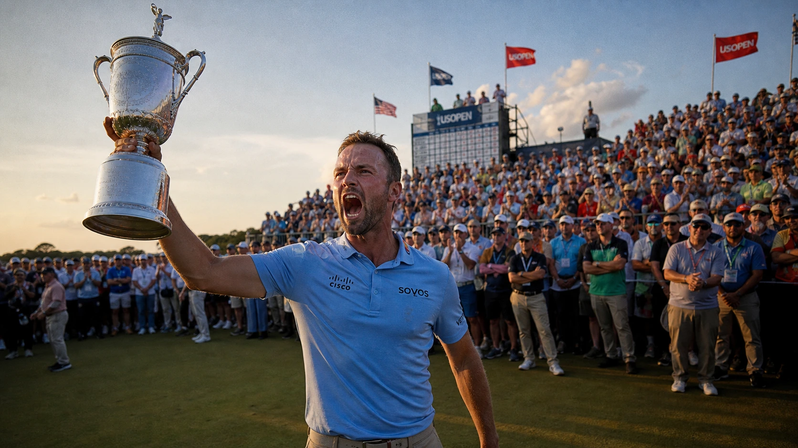

Quick answer: Wyndham Clark won the 2026 U.S. Open at Shinnecock Hills, finishing at 4 under par to beat Sam Burns by one shot. He closed with a wobbly 3-over 73 but did just enough to complete a wire-to-wire victory, leading after all four rounds. It is his second U.S. Open in four years, and he did it while a New York gallery openly rooted against him and sang happy birthday to playing partner Scottie Scheffler. Clark two-putted the 72nd hole from 53 feet to seal it.

It was ugly, tense, and at times downright hostile. It was also a gritty, redemptive win. Here is how it happened.
How Did Wyndham Clark Win the U.S. Open?
By refusing to fold when everything pointed toward a collapse. Clark carried a six-shot lead into Sunday, watched it nearly vanish, and survived anyway. He finished at 4 under, one clear of Sam Burns, with a final-round 73 that was far from pretty but more than enough.
The math tells the story of the day. A six-shot cushion at dawn shrank to a single stroke on the back nine. But every time the door cracked open, Clark slammed it shut with a clutch putt or a recovery from trouble. He has won U.S. Opens on scrambling and nerve before, and he did it again here. The trophy is his because he made the putts that mattered while everyone around him blinked.
What Was the Final Score and Margin?
Clark finished at 4 under par for the championship, winning by one shot over Sam Burns at 3 under. Tom Kim took third at 1 under. Scottie Scheffler tied for fourth at even par alongside J.T. Poston and Keith Mitchell.
Clark's rounds tell the tale of a fast start and a white-knuckle finish: a record-tying 64, then a 69, a 70, and finally a wobbly 73 on Sunday. The early scoring built a lead so big that even a closing round in which he gave shots back could not be reeled in. Burns, who closed with a brilliant 67, ran out of holes by a single stroke.
How Did Clark Handle the Hostile Crowd?
He absorbed it and let his golf answer. This was the defining subplot of the whole afternoon. From the first tee, where the gallery serenaded Scheffler with happy birthday, the New York crowd was firmly in "Anybody But Wyndham" mode. Fans cheered his missed putts, yelled for his ball to find the bunkers, and groaned at his good shots. Police removed several hecklers from the property for crossing the line.
Clark did not hide from it afterward. He admitted the crowd clearly did not want him to win, and called it rare to have fans actively rooting against his shots. But he has been here before, closing out his 2023 U.S. Open as the villain against fan-favorite Rickie Fowler, and he leaned on that experience. Playing the heel in front of a crowd that wanted him to fail, he kept his composure and won anyway. By the end, even the doubters had to respect the grit.
What Was the Turning Point?
The 16th hole. With his lead trimmed to one over Burns and momentum slipping away, Clark yanked his tee shot into the deep fescue on the par-5 16th, a brutal lie that all but screamed bogey. Instead, he pitched out, pitched on, and drained a 24-foot downhill putt for a birdie that pushed his lead back to two.
He pumped his fist, and the air went out of the chase. That single putt, from a spot where most players would have been happy to escape with par, was the dagger. It is the kind of moment that wins major championships, and it came at the exact instant Clark needed it most.
Did Clark Really Almost Blow It?
He came closer than a six-shot lead should ever allow. Clark bogeyed the 1st, struggled to a six on the par-5 5th, and missed a short par putt on the 7th, a stretch that sliced his lead all the way to one. Sam Burns, starting the day seven back and playing several groups ahead, caught fire with birdies on three of his first five holes and briefly turned a coronation into a genuine fight.
Then, after the birdie at 16 settled him, Clark made it interesting one more time, three-putting the 17th to fall back to a one-shot lead playing the last. But he found the 18th green in regulation and calmly two-putted from 53 feet for the win. The ghost of Greg Norman, the only man ever to blow a six-shot final-round major lead, hovered all day. Clark did not join him.
What Does This Win Mean for Clark?
It cements him as one of the better players of his era and, more personally, completes a redemption arc. This is his second U.S. Open in four years, putting him among the 24 men with multiple U.S. Open titles. He also became just the ninth wire-to-wire champion in the championship's history, leading after all four rounds, and the first to do it since Martin Kaymer in 2014.
Clark called this one a redemption win. He talked about leaving last year's U.S. Open at Oakmont in shambles after a rough season, and about how much can change in a year. He has had a public reckoning with his on-course temper, including some ugly club-slamming moments, and spent a year trying to make amends. Winning a major as the most unpopular man on the property, and keeping his cool while doing it, is about as complete an answer as he could have given.
What Happened to Scottie Scheffler's Grand Slam Bid?
It fell flat. The fairy tale everyone wanted, Scheffler completing the career Grand Slam on his 30th birthday, never materialized. He bogeyed the first hole, never found the charge his game promised, and finished tied for fourth at even par. The world No. 1 will have to wait at least another year for his shot at joining the six-man Grand Slam club.
There is a small irony in it. The crowd spent all day willing Scheffler into the championship, but it was his best friend, Sam Burns, who actually made the run. Scheffler was a passenger in his own final pairing while the drama happened elsewhere.
Who Else Made Noise?
- Keith Mitchell made history. He closed with his fourth straight even-par 70, becoming the first player in U.S. Open history to post four rounds of exactly 70. After opening the championship with a 41 on his first nine, that is a remarkable bit of consistency.
- The crowd turned ugly. Fans rooted openly against Clark all day, cheering his bad shots and willing his ball into trouble, with several ejected for heckling. He had to win this thing as the villain.
- Rory faded out. McIlroy admitted the wheels came off on the weekend, closing with back-to-back 73s to finish well down the board.
The Raw Read
This was not a dominant champion strolling to a trophy. It was a man hanging on by his fingernails while an entire golf course rooted for him to crack. And that is exactly what makes it a better story than the six-shot cakewalk it looked like on Saturday night.
Clark won ugly. He bogeyed the first, nearly coughed up a massive lead, three-putted the 71st hole, and still got it done because he made the one putt that mattered on 16 and refused to let a hostile crowd rent space in his head. Strip away the noise and that is what a U.S. Open champion looks like: not flawless, just tougher than the course and the moment. Today, that was Wyndham Clark, and nobody can take the second trophy away from him.
This is a developing story and will be updated as the final round concludes.
Frequently Asked Questions
Who won the 2026 U.S. Open?
Wyndham Clark, finishing at 4 under par to win by one shot over Sam Burns at Shinnecock Hills. It is his second U.S. Open title.
What was Wyndham Clark's winning score?
4 under par for the championship, with final rounds of 64, 69, 70 and 73.
Did Clark win wire-to-wire?
Yes. He led after all four rounds, becoming the ninth wire-to-wire U.S. Open champion and the first since Martin Kaymer in 2014.
Who finished second?
Sam Burns, at 3 under, after a closing 3-under 67 that came up one shot short.
Did Scottie Scheffler win the career Grand Slam?
No. Scheffler finished tied for fourth at even par on his 30th birthday, falling short of the U.S. Open he needed to complete the slam.
Why was the crowd against Wyndham Clark?
Fans heavily favored Scheffler, who was chasing the Grand Slam on his birthday, and some still held Clark's past on-course outbursts against him. Several hecklers were removed by police.
How much did Wyndham Clark win?
A record $4.5 million from the U.S. Open's record $22.5 million purse.